← Laufstrecken
Niederurnen Runde
Wegname:
NiederurnenRunde
Streckenart:
Laufstrecke
Kategorie:
Berglauf
Region:
Glarus
Streckenlänge:
20 Km
Hm +:
1500 hm
Hm -:
1500 hm
Datum:
17.11.24
Kurzbeschrieb:
Niederurnen-Morgenholz-Hirzli-Planggenstock-Mälchterli-Rossweidhöchi-Morgenholz
Link SchweizMobil:
Bild SchweizMobil:
Bericht:
Samstagmorgen, die Sonne lacht bei stahlblauem Himmel. Es ist wolkenlos. Was für ein Tag. Für Joschi wird es ein letztes Lauftraining mit den Alpinrunner als Leiter sein. Zum Abschluss hat er sich nochmals einen tollen Trail Leckerbissen ausgesucht. Er wird in den wohlverdienten Ruhestand treten. Schade, schade, aber du hast es dir verdient. Wir würden uns aber trotzdem freuen, wenn du wieder mal mit von der Partie bist. Ganz unverhofft, kommt sprichwörtlich oft…
Pünktlich um viertel nach neun stehe ich bei der Talstation der Morgenholz Bahn, welche ins Niederurner Täli führt. Ich bin mal wieder der Letzte… Joschi verabschiedet sich auch schon gleich mit Julie auf die Bahn. Wir laufen zu neunt los bei der Talstation. Erst führt der Weg entlang dem Bach ins Tal hinein. Schon bald steigen wir eine steile Waldstrasse empor. Diese verlassen wir auch gleich wieder. Beim Bauernhof werden wir von einem netten Herrn freundlich darauf hingewiesen, dass dieses Wegstück eigentlich gesperrt sei wegen Hangrutsch. Ein weitergehen nur auf eigene Verantwortung, meint der Herr. Wir nicken freundlich zu und laufen weiter. Weiter oben ist der Weg wirklich ganz leicht weg gerutscht. Dies ist aber nicht weiter schlimm. Der Absatz kann mit einem grossen Schritt ganz leicht überwunden werden. So verbringen wir praktisch den gesamten Aufstieg an der Sonne. Es ist sommerlich warm. Die Sonne heizt tapfer ein und wärmt mit ihren Strahlen auch unsere Herzen und Gemüter. So ein wunderschöner Tag in der Natur. Ich geniesse es in vollen Zügen.
Ein erster Stopp legen wir oberhalb der Bergstation Morgenholz ein. Ab jetzt schlängelt sich der Weg in unzähligen Spitzkehren zum Hirzli hoch. Wunderschön fügt sich der Weg ins Gelände ein. Ich kann mich mal wieder so richtig auskotzen. Das tut richtig gut. Oben auf dem Hirzli geniessen wir das wunderschöne Bergpanorama über den Walensee zu den Churfirsten bis fast in Bündnerland. Keine einzige Wolke ist aus zu machen am Himmel. Einzig der Nebel über Zürich trübt die Aussicht etwas.
Nach einer kurzen Verpflegung laufen wir weiter über den Gratweg zum Planggenstock. Ein toller und spannender Weg, der sich teilweise rechts oder links am Grat zum Planggenstock schlängelt. Die Tiefblicke sind imposant und teilweise furchteinflössend. Auf dem Planggenstock knipst uns ein netter Herr noch das passende Gipfelfoto. Weiter führt der Gratweg sehr abwechslungsreich und wunderschön dem Grat entlang. Teilweise genau auf dem Grat darauf. Ich kann so richtig abschalten und einfach nur geniessen. An der Kantonsgrenze Glarus-Schwyz über die Rossweidhöchi verläuft der Weg weiter über den Grat zum Mälchterli, wo wir nochmals kurz auf dem Bänkli innehalten. Mit einem kurzen Blick können wir erkennen, dass es mit der Sonne bald vorbei sein wird. So tauchen wir in den Schatten ab, wunderschön präsentiert sich die Landschaft im Winterkleid. So kann ich die ersten Spuren ungehemmt in den Schnee ziehen. Ein Jauchzer muss hier einfach sein… Sorry!
Der Trail führt durch den zauberhaft verschneiten Wald. Teils ruppiger, teils etwas sanfter, bis wir in die Strasse einbiegen, welche uns vorbei an winterlich eingekleideten kleinen Häusern bis zum Beizli Hirzli bringt. Es wird Zeit für eine kurze Verschnaufpause und eine kleine Zwischenverpflegung. Alexandra und Ayhan halten nur kurz inne, da sie am Abend noch terminliche Verpflichtungen haben, verlassen sie uns auch kurze Zeit später wieder. Zu siebt beschliessen wir noch bis ins Tal zu laufen. Joschi und Julie können die Zeit noch etwas länger in der warmen Stube geniessen, denn sie nehmen die Bahn zurück ins Tal. Wir laufen dieses Mal die alte Bergstrasse hinunter nach Niederurnen. Die Betonpiste ist ganz schön steil und schlängelt sich in engen Spitzkehren dem Talboden entgegen. Eine fast senkrechte Betonpiste, die nochmals unsere volle Konzentration fordert. Das feuchte Laub auf der Strasse macht das ganze Unterfangen zu einer leichten Schlitterpartie. Jeder Schritt will gezielt gesetzt sein. Sturzfrei können wir diese letzte Hürde meistern und treffen praktisch zeitgleich mit Joschi und Julie bei der Talstation ein. Eine kurze Verabschiedungsrunde und schon sitze ich wieder im Auto und trete müde, aber zufrieden meinen Heimweg an.
Vielen Dank an Joschi für die kurzweilige Tour im Glarnerland. Ein absolut würdiger Abschluss. Auf der heutigen Tour waren alle vier Jahreszeiten gut vertreten. Von Winter bis Sommer hatten wir heute einfach wirklich alles. Traumhaft! Vielen Dank auch den Mitläufern. Es war ein gelungener Tag, der nach einer Fortsetzung schreit…. Teil 2 folgt….
Autor:
Dani Z.
Teilnehmer:
Albert, Helene, Barbara, Julie, Verena, Ruedi, Ayhan, Alexandra, Joschi, Bruno , Dani Z.
Galerie:
-
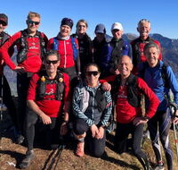
-
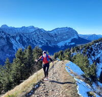
-
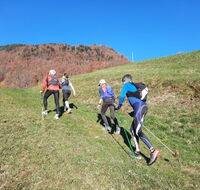
-
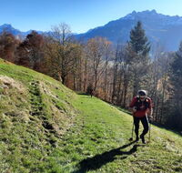
-
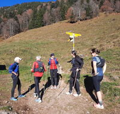
-
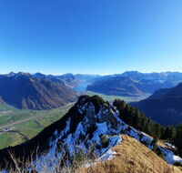
-
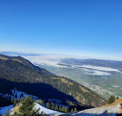
-
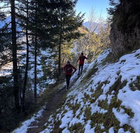
-
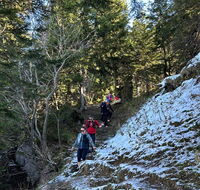
-
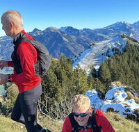
-
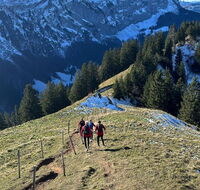
-
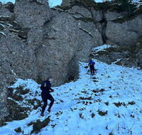
-
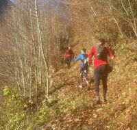
-
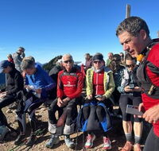
-
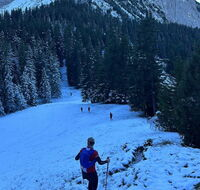
-
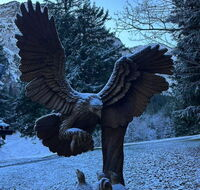
-
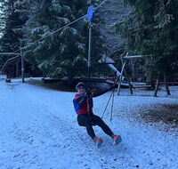
-
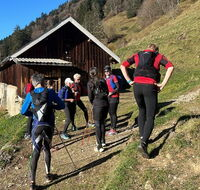
-
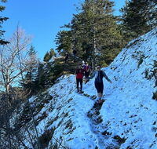
-
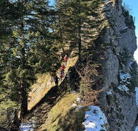
-
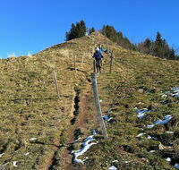
-
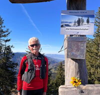
-
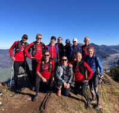
-
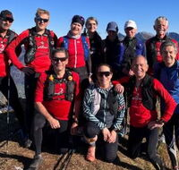
-
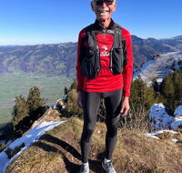
-
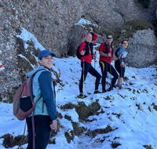